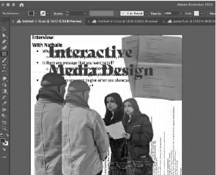
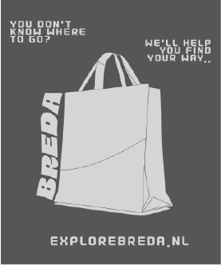

Project 1: Iterative design - documents - Project 1 Iterative design - Project 2 - Video Iterative design - Project 2 - Posters
In the process of branding Nathalie's artworks, I've been utilizing Adobe apps extensively,
particularly Adobe Illustrator for designing logos and stylescapes. However, during my free time,
I've also been experimenting with Photoshop and Premiere Pro.
In the first project, my concept for the client centered around creating a stamp-like image featuring a blossoming pink flower,
which was a specific
request from the client. Before I started to work on the design I was searching for inspiration (for instance, this is how I came
across the stamp idea and the vivid colors).
In the beginning, I was experimenting with two designs, but in the end, I stuck with a cherry blossom on a stamp. Anyway,
I did try out different colors to have some options. For selecting colours Canva's color palettes proved to be
incredibly helpful as they offer a wide range of options.
In the end, my group used my idea with the stamp but we used a logo that my groupmate made, so I merged the two into one.
However, I had the idea of making flyers for the client as an offline media tool, therefore I could use my previous work with a little twist (a short slogan).
You can see the inspirations, the process and the final products in the attached document.
Project 2:
“Selling” a website is not so easy especially if it is about a city, but me and my group decided to have fun while working, and the fact that we targeted international students in the end it wasn’t even that uninspiring.
Since we are also international students, we know what type of videos we have to make to reach our target.
TikTok, trends, and rapid but funny videos are surrounding us on the internet, so we know that that is going to be our way of reaching this project.
If you are interested about the process I made the final videos, read the attached document below.
In this project, I also had the task of working on the design of the project, which means making products as offline marketing for explorebreda.nl.
Since my group decided to target international students, I knew that our posters must be fun, striking, and simple (since young adults I think mainly
look after the simplest but most eye-catching things).
I also knew that we need a slogan which can appear on the posters... something that they can remember.
If you are ineterested on the process of designing, the poster(s), and the logo, read the document below.
For Fontys:
As an additional task, I made a video for Fontys, about a day of my life.
My task was to make a short (max 2 minutes) video, about what a school day of mine looks like, with a morning routine,
introduction, and afternoon activities.
Overall my idea was to take the clips on a fun day when more things happen to me, this is why I chose the one when
my group had to go to Breda to present our project.
I think the hardest part of this assignment was not forgetting about taking the clips throughout my day and also speaking in front of the camera by myself. However, I think in the end, I had enough clips so everything turned out well.
Editing the short film, was alright since I already had some knowledge of the use of Premier Pro. I tried to add a nice
touch to it with some music in the background, and with some text under the parts when the user might be lost what is going on.
In the end, I got great feedback about the video, so I think I managed this short project in a great way.

